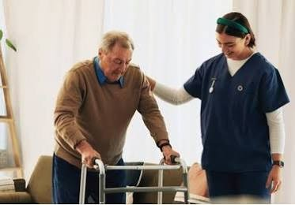

Support built on
dignity and patience.
Caregiving experience supporting older adults in a clinic setting, alongside informal volunteer support for people with disabilities and autistic children.
Care that starts with a steady hand.
Patient, respectful support that keeps people safe, comfortable and in charge of their own day.
Good care is often quiet: a steady arm on the stairs, an unhurried routine, a conversation that makes someone feel heard.
I bring patience, respect and a calm presence to everyday support, from personal care and mobility help to companionship at mealtimes and gentle, predictable routines for autistic children. Every person has their own pace, preferences and story. My job is to notice, listen and adapt.

What you can count on
- Dignity in every task
- Patience that never rushes
- Safety in every step
- Clear, kind communication with families
Photographs in this section are illustrative and do not show the people I have supported.
Care & community support
A person-centred approach that values dignity, choice, safety and independence.
Caregiver
- Assisted older adults with personal care and activities of daily living, including hygiene, dressing, meals and mobility support.
- Provided companionship and emotional reassurance while respecting individual routines and preferences.
- Observed day-to-day comfort and wellbeing and communicated concerns to senior staff.
- Helped maintain a clean, safe environment and worked with colleagues to support consistent care.
Family & Community Support Volunteer
- Provided one-to-one assistance and companionship to people with disabilities as support was needed.
- Supported autistic children through patient communication, predictable routines and attention to individual preferences.
- Encouraged participation, choice-making and independence while respecting personal boundaries and dignity.
- Communicated with family caregivers to help maintain consistent support.
Core strengths
Person-centred support · Activities of daily living · Elderly care · Disability and autism support · Companionship · Communication · Observation and reporting · Safety awareness.
Certification & transportation
CPR, AED & First Aid certification · Ontario G2 driver’s licence · Access to a reliable vehicle.
Caregiver / Direct Support resume
A focused resume for caregiver, disability support and direct support professional opportunities.
A downloadable PDF can be added once the final resume file is selected.